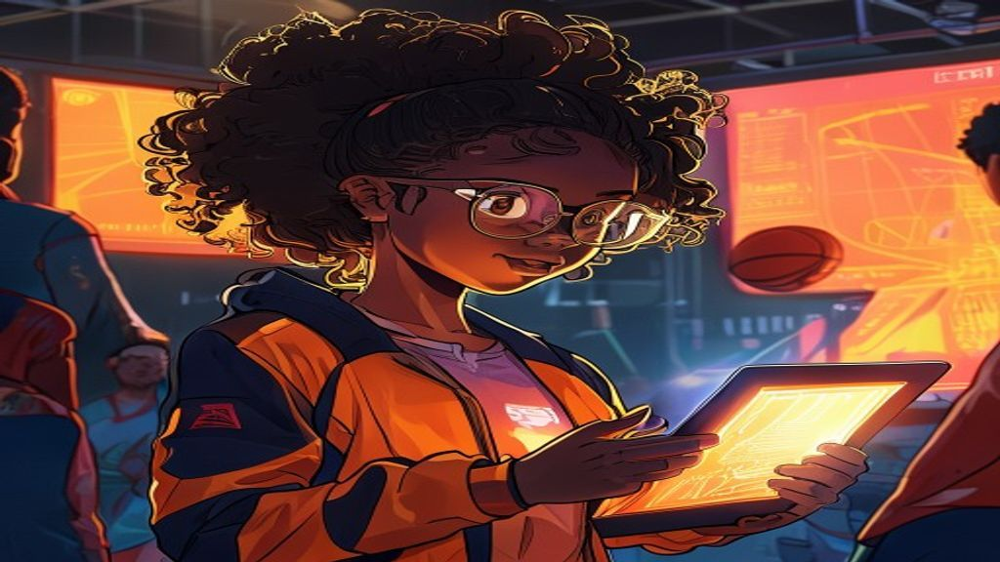

Court Vision: The Data Analyst
You are Maya, the new data analyst for the team! The coach needs your help. Read the data, find the mean, median, and mode, and make the right call to win the game!
Eres Maya, la analista de datos del equipo. Lee los datos y haz la jugada correcta para ganar el partido.
Act 1 · Statistical Questions & Data
The Big Question
🔒 Finish Act 1 first to unlock Act 2.
Act 2 · Mean, Median & Mode
Center of the Game
🔒 Finish Act 2 first to unlock the Final Call.
Final Call · Boss
The Game-Winning Decision

Game Won!
You did it, Analyst! You found the statistical question, read the data, and used the mean, median, and mode to make the game-winning call. The team is celebrating — thanks to you!
¡Lo lograste! Usaste la media, la mediana y la moda para ganar. ¡Excelente trabajo!
Reference